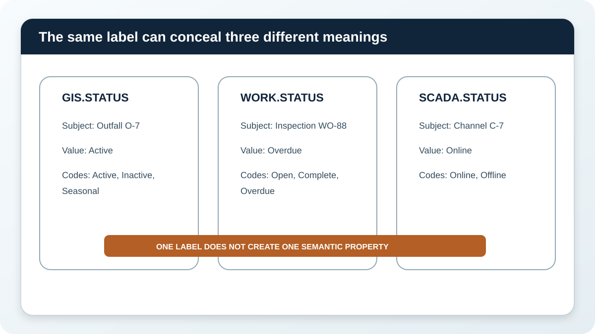
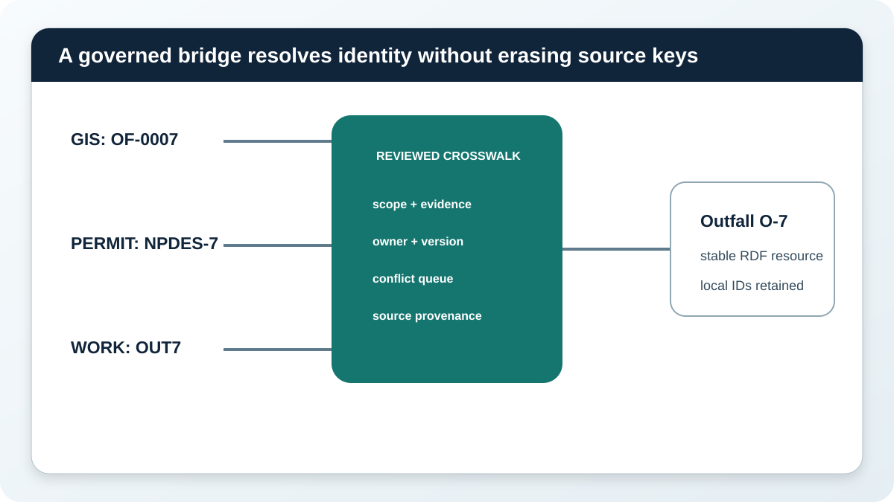
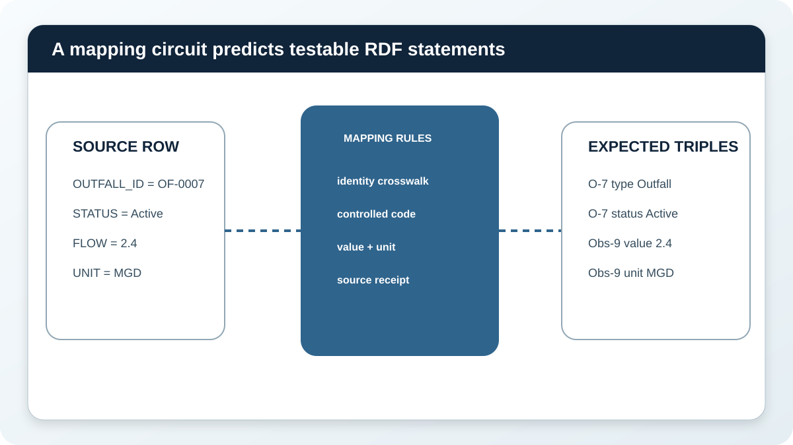
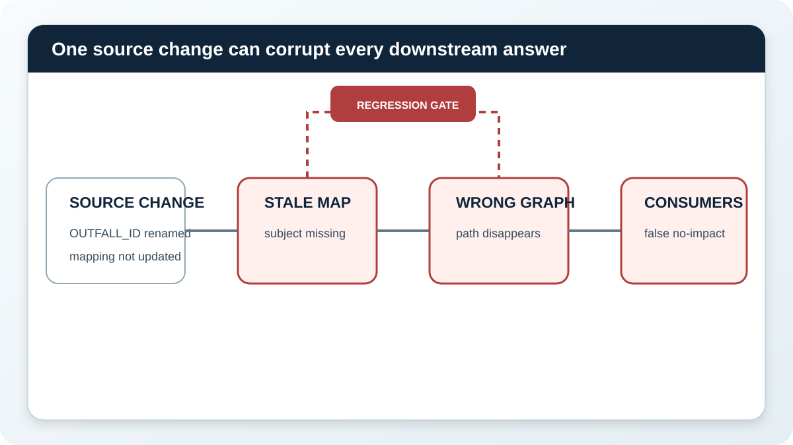

Know enough, permit deliberately, prove the result
Ask whether the evidence is fit, whether this actor may act, and whether the result can be verified.
Connect approved concepts to real source fields through testable identity, transformation, provenance, and change controls.
Misconception we will change: Semantic mapping is column renaming, an ordinary join, or mandatory data copying.
Ask whether the evidence is fit, whether this actor may act, and whether the result can be verified.
Define identities, validation, policy decisions, tool schemas, request keys, recovery, verification, and audit events.
Name approval thresholds, prohibited actions, accountable owners, review cadence, incident response, and correction authority.
The Geographic Information System says Outfall O-7 has STATUS Active. The work-management system says inspection WO-88 has STATUS Overdue. Telemetry says discharge channel C-7 has STATUS Online. The label is identical, but the subjects, meanings, allowed values, owners, and time behavior differ.
If a mapping collapses all three into one hasStatus property, every downstream dashboard, query, and agent receives confident semantic error. The first mapping decision is to preserve the distinctions.

Three source boards show Active outfall status Overdue inspection status and Online telemetry status with different subjects and code lists
Choose the strongest answer, then check it. The feedback explains the boundary.
GIS key OF-0007, permit identifier NPDES-7, and work location code OUT7 may refer to the same outfall, but a spelling match is not enough. A governed identity rule needs evidence, scope, owner, confidence or review state, and a conflict route.
Keep each source identifier and provenance even after the records resolve to one RDF resource. That lets a steward trace and challenge the bridge.

GIS OF-0007 permit NPDES-7 and work code OUT7 pass through a reviewed crosswalk to stable Outfall O-7 while source links remain
Select every item the bounded task needs. Leave irrelevant or unauthorized material outside the packet.
A mapping names the source relation, field, target class or property, identity rule, transformation, datatype, unit, and authority. It also predicts the RDF statements that should appear or be available virtually.
Wire each field to the concept that matches its real job. The bench includes one tempting false equivalence so you can see why labels alone are unsafe.

An outfall source row passes through identity code and unit mapping rules to expected RDF triples with provenance
Read the subject and source contract. Choose the target concept that preserves meaning.
A join combines records according to matching keys. A transformation changes representation, such as feet to meters. A semantic mapping connects source structures to RDF terms. An inference derives a statement under declared semantics.
One pipeline may use all four operations. Naming each job makes its evidence and failure boundary reviewable.
Match each ordinary-language question to the job that answers it. Check all rows together, then revise any row that needs another look.
Source systems change. Columns are renamed, code lists drift, units change, identifiers merge, and authority moves. A mapping can continue running while producing the wrong graph.
The repair laboratory asks you to stop the earliest unsafe effect. A good repair preserves the source change, updates the mapping deliberately, reruns expected-triple and competency-question tests, and notifies affected consumers.

A source column rename passes through a stale mapping to missing triples wrong query results and unsafe dashboard and agent answers unless a regression gate stops it
Choose Repair mapping, Hold and steward, Reject shortcut, or Accept governed change.
Choose one utility concept and source. Record a real competency question before writing field rules. Then state the expected triples and both passing and failing test cases.
Your specification should survive a source rename, unit change, and owner transition without forcing a reviewer to reverse-engineer code.
Specify one mapping from competency question through change control.
| Dimension | Full-credit evidence | Points |
|---|
No. It connects source meaning, identity, values, relationships, transformations, and provenance to governed semantic terms.
Not always. Use approved identity rules and preserve conflicts for stewardship.
No. A mapping may create a virtual graph at query time or support materialized RDF, depending on the architecture.
No. Map the fields and relationships needed for bounded competency questions and governed reuse.
The source owner and domain owner approve meaning and authority. Engineers implement it, and stewards help test evidence and conflicts.
Selected document entities and claims can be extracted and connected with provenance, but extraction and authority need separate review.
R2RML and Direct Mapping define ways to express RDF views of relational data. Local source meaning, identity, authority, transformations, and tests still require governed review.
See the concepts, sources, competency, and evidence boundary behind this module.
Discuss which utility action should act, ask, refresh, clarify, or stop. Community discussion is not governed evidence.
Complete the false-equivalence decision, identity check, wiring bench, operation match, repair laboratory, and Mapping Specification.